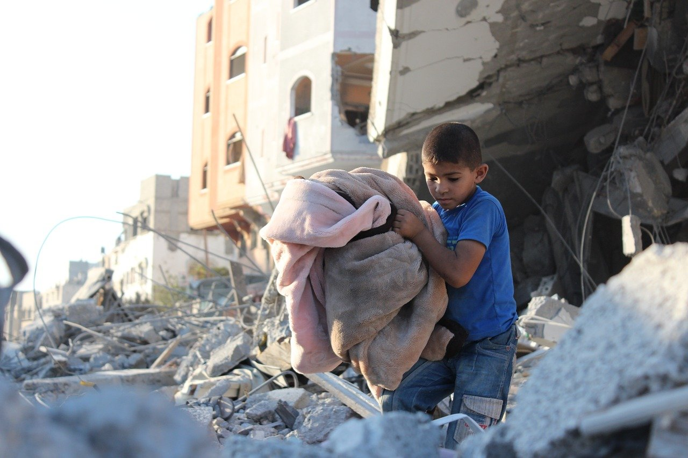

Sign Petitions For Palestine to Have Your Voice Heard

Open Humanitarian Corridors for Children in Gaza by Sergio Cordeiro
Call For Ceasefire Petition by Ceasefire Now
American Government to Call for Immediate Ceasefire in Gaza
Action Network Petition by Palestinian Youth Movement
Save the Destroyed Tyre School for Children in Palestine by Angela Celeste Costantino